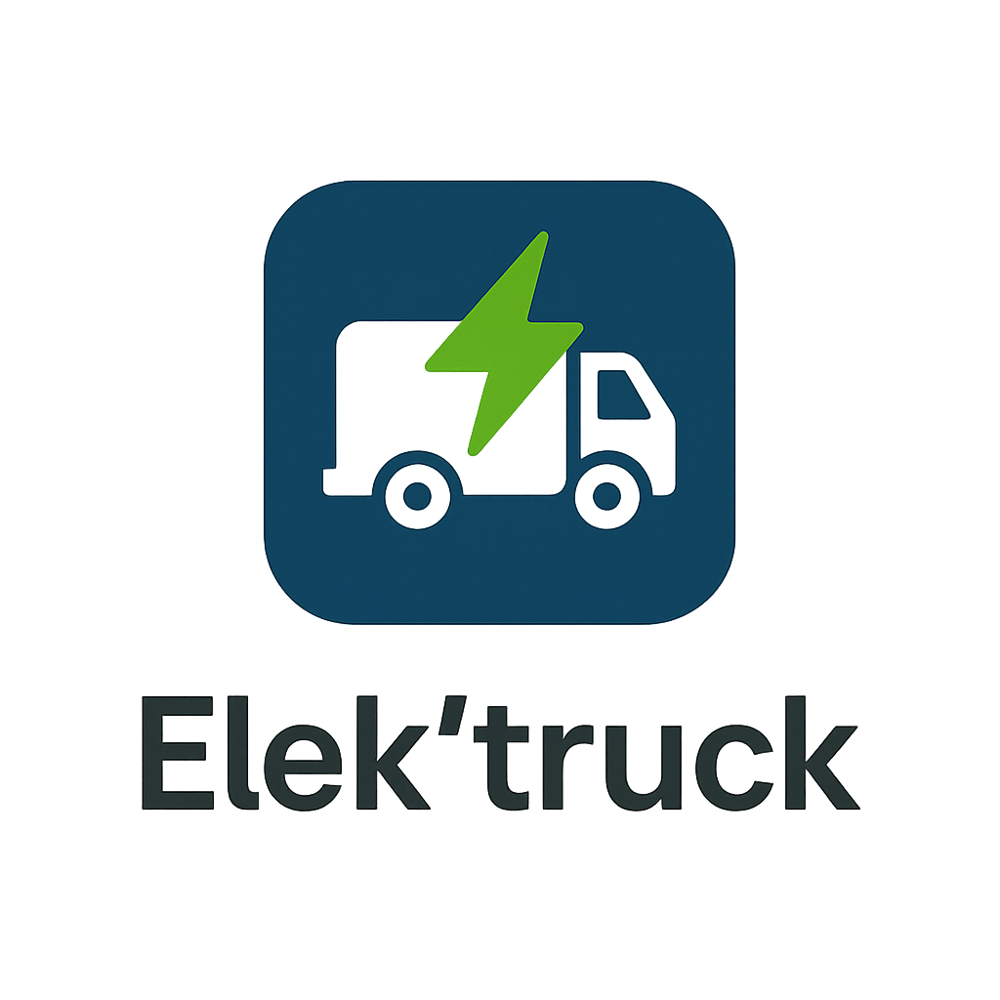

Résolution d'un problème technique en équipe en 24h : Comment initialiser une électrification du transport routier au pays basque ?
Dans le cadre de mes études à l'ESTIA, j'ai participé au concours "24h de l'innovation" dans lequel nous avons obtenu le prix de la meilleure innovation territoriale, nous offrant ainsi la 4ème place.
C'est donc à la porte du podium que nous avons terminé, mais sans parler des raquettes de paddle et autres goodies, cette réelle expérience hors des cadres de l'éducation "classique" nous a offert à moi et mes camarades connaissances, compétences et une meilleure idée des enjeux de l'ingénieur d'aujourd'hui.
Même si des tas d'idées nous sont venues à l'esprit, certaines pistes déjà explorées n'étaient pas viables, c'est pourquoi nous les avons exclues.
Une autre contrainte cette fois posée par notre porteur de projet était de se limiter aux échanges internes au pays basque, nous ne considèrerons alors pas les flux traversant et arrivants.
Le transport routier est un secteur majeur de l'économie basque, mais il est également responsable d'une part importante des émissions de gaz à effet de serre dans la région. Pour répondre aux objectifs climatiques et améliorer la qualité de l'air, il est crucial d'initier une transition vers des solutions de transport plus durables et respectueuses de l'environnement.
La solution que nous avons donc retenue est assez facile à envisager et à mettre en place, et profite d'une efficacité remarquable sur le plan économique comme énergétique.
Elle consiste en une plateforme d'échange de cabines électriques et se résume en ces quelques points :
Pour assurer la fluidité de l'échange de cabines, nous avons conçu une application mobile qui permet aux chauffeurs de camions de réserver des places de recharge et d'échange, ainsi que de suivre l'état des cabines disponibles.
Même si cette appliation est incomplète au vu de la quantité de travail à abattre en 24h, elle permet quand même de s'imaginer le genre d'utilisation que l'on pourrait en faire.
Voici les principales fonctionnalités disponible sur celle-ci :